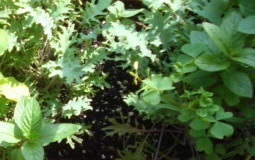

Past Forum Events
These events occurred between 2007-Present
July 2011 Friends & Family Event - registration is closed
Registration for the July Friends & Family event is now closed. Maps/directions to the event are attached.
You can still attend but will be charged an additional $2.00 walk-up fee.
Date: Wednesday, July 27, 2011 5:30pm-7:30pm
Location: Danish American Center 3030 West River Parkway, Minneapolis
Description:
Curious about eating local? How about eating that plant growing in the
vacant lot down the street? Or that rabbit eating your garden? Experts
on the local food movement and on foraging in the urban environment will
identify common edible plants, expand your awareness of food options in
your immediate environment, and answer questions to bring the locavore
lifestyle closer, even if you just want to buy a frozen pizza that
hasn’t traveled across the country. Join us Wednesday, July 27 at the
Danish American Center in Minneapolis for a light meal and then for a
walk along the Mississippi River Winchell Trail. Our presenters will
point out meal options as we go!
Cost: registration is closed. Walk-ins are welcome. Walk-ins will be charged and additional $2 per person.
• $12 for members
• $18 for non-members
• FREE for kids 10 and under (pre-registration was requested)
• Walk-ins will be charged an additional $2 per person.
The next FWEF event will be on September 21, 2011. This event is a tour of the St. Anthony Falls Laboratory and will be FREE to FWEF members! $18 for non-members and $12 for students. Registration will open soon for this event.

July 2011 Event (click here to register)

Über-local eating—Family Friendly Outdoor Event. Curious about eating local? How about eating that plant growing in the vacant lot down the street? Or that rabbit eating your garden? Experts on the local food movement and on foraging in the urban environment will identify common edible plants, expand your awareness of food options in your immediate environment, and answer questions to bring the locavore lifestyle closer, even if you just want to buy a frozen pizza that hasn’t traveled across the country. Join us Wednesday, July 27 at the Danish American Center in Minneapolis for a light meal (from Seward Coop) and then for a walk along the Mississippi River Winchell Trail. Our presenters will point out meal options as we go! If it rains on our parade, then most of the talk will be inside. Some brave people might venture out, so bring along your rain gear!
- Claudia Rhodes, Event coordinator at the Seward Coop
- Dan Shaw, Minnesota Board of Water & Soil Resources
- Peder Schweigert, foraging and local food aficionado
- Randy Schindle, Minnesota Department of Natural Resources
Sponsor this event for only $50.00. Please contact us for this and additional sponsoring opportunities.
Cost: You can pay via credit card or check using PayPal on our online registration system, below. Please note, all sales are final (no refunds/credits/transfers). Registering early helps us order the appropriate amount of food for the event. Due to the government shutdown, we have decided to extend registration through Tuesday night, July 26. Thank you.
- $12 for members and friends/guests of members (please register for everyone at the time the member registers) and students
- $18 for non-members
- FREE for kids 10 and under
- Walk-ins will be charged an additional $2 per person, so please try to register early.
Location: Danish American Center at 3030 West River Parkway, Minneapolis.
Sponsor(s): Red Stag Supper Club
Carpool to our event: If you are interested in carpooling please contact our transit coordinator at jorg0206@umn.edu.
Bus or bike to our event: Metro Transit trip planner

May 2011 Local Wine Event - registration is closed
Registration for the Local Wine event is now closed.
Registration for the July event, urban foraging, will be open tomorrow.
Northern Vineyards Winery, 223 Main St. N, Stillwater, MN 55082

Join the FWEF for a local wine tasting event at Northern Vineyards
in beautiful Stillwater Minnesota. The grapes are grown in Minnesota
and western Wisconsin by the members of the Minnesota Winegrowers
Cooperative. You must be 21 years old or older to attend.
The evening will begin with four white wine samplings with crackers,
cheese, and fruit while learning about the vineyards local farmer co-op
and sustainability efforts. The event continues with a tour of the
facility and four red wine samplings.
Cost: registration is closed.
Carpool to our event: If you are interested in carpooling please contact our transit coordinator at abaribea@umn.edu

May 2011 Local Wine Tasting Event (click here to register)
 Northern Vineyards Winery, 223 Main St. N, Stillwater, MN 55082
Northern Vineyards Winery, 223 Main St. N, Stillwater, MN 55082
Join the FWEF for a local wine tasting event at Northern Vineyards
in beautiful Stillwater Minnesota. The grapes are grown in Minnesota
and western Wisconsin by the members of the Minnesota Winegrowers
Cooperative. You must be 21 years old or older to attend.
The evening will begin with four white wine samplings with crackers,
cheese, and fruit while learning about the vineyards local farmer co-op
and sustainability efforts. The event continues with a tour of the
facility and four red wine samplings.
Cost: $18 for EVERYONE (members, students, non-members, women and men!). Limit 45 attendees (only 2 spots remain).
Carpool to our event: If you are interested in carpooling please contact our transit coordinator at abaribea@umn.edu
Bus or bike to our event: Metro Transit trip planner
March 2011 Event (click here to register)

March Event:
Networking in the Environmental Field
Join the FWEF and Macalester College for our annual networking only event! Co-hosted by the Sustainability Office at Macalester College!
- Meet one-on-one with our event sponsors.
- See how their positions relate to and intertwine with the environment.
- Find out what it takes to perform their job and what courses in college helped them.
- Learn about environmental jobs opportunities in a variety of business sectors.
- Bring your resume. We can assist you with ideas.
- Talk to others who have found jobs in the environmental field.
- Add these people to your network.
- Network=networth=greater chance of finding a job.
Meet representatives from these organizations.
Sustainability Office at Macalester College
Historical Information Gatherers, Inc.
Resource Employment Action Center - Women's Programs
Capitol Region Watershed District
Pace Analytical Services, Inc.
Sponsoring is closed for this event. Please contact us for other sponsoring opportunities.
Cost: $12 for members & students, $18 for non-members. Because our event is so very close to spring break, we have decided not to charge a walk-up fee. However, please register for the event so we can order the appropriate amount of food. Thank you!
Location: Macalester College, Weyerhaueser Hall (62 Macalester Street), 2nd floor Board Room (see building 27 on the map). This building is accessible.
Carpool to our event: If you are interested in carpooling please contact our transit coordinator at jorg0206@umn.edu.
Bus or bike to our event: Metro Transit trip planner
January 2011 Event: Walk Around Lake Superior (click here to be directed to the registration page)
Location: REI at 750 W. American Blvd, Bloomington, MN 55420 (952-884-4315)

2011 FWEF events
Mark your calendar for FWEF's 2011 events!
- January 26, 2011: Adventure - Hiking Around Lake Superior
- March 23, 2011: Networking
- May 25, 2011: Organic/Local Wine and Cheese
- July 27, 2011: Annual Outdoor Family Event
- September 21, 2011: Local Tour
- November 16, 2011: Political Panel
November 2010 Political Panel
November Political Panel and Networking Event - November 17, 2010 from 5:30 to 7:30 pm.
Location: Hamline University - Bush Student Center, 2nd floor ballroom, St. Paul
Description: Join the Forum of Women in the Environmental Field and the Center for Global Environmental Education for a light dinner and a panel discussion highlighting environmental issues facing our cities. Hear from women at the city level, whether they are elected officials or city staff, who are working to improve the environmental health of our communities. There will be plenty of time for questions and answers.
Panelists
- Ginny Black, Plymouth City Councilmember
- Sharon Doucette, City of Woodbury Environmental Resources Coordinator
- Jen McLoughlin, City of Woodbury Sustainability Specialist
- Gayle Prest, Director of Sustainability, City of Minneapolis
Agenda
- 5:30 pm: Registration open, dinner available
- 6:00 pm-6:15 pm FWEF Annual Elections
- 6:15 pm-7:00 pm Panelists Remarks
- 7:00 pm-7:20 pm Q & A
- 7:20 pm-7:30 pm closing remarks and announcements
Cost $12 for members and students, $18 for non-members
Register by Monday, November 15, 2010 by close of business
Click on the November 2010 Political Panel at the top of the page to be directed to the registration page. Thank you!
September 2010 Sustainable Building Tour and Networking Event
 September Sustainable Building Tour and Networking Event - September 21, 2010
September Sustainable Building Tour and Networking Event - September 21, 2010
Location: Great River Energy
Description: Join the FWEF for a tour of the Great River Energy headquarters, the first platinum LEED-certified building in Minnesota. One of the most energy-efficient and sustainable buildings in the state, it showcases rooftop solar photovoltaic panels, its own wind turbine, a state-of-the-art geothermal heating and cooling system and multiple atriums to allow maximum daylight. The grounds capture rainwater to use for flushing toilets and irrigation.
Time: Tour 9-10am, optional networking breakfast at 7:30am
Costs:
FREE tour for FWEF & RAM members and students
$5 tour registration for non-members
Optional networking breakfast at your own expense
Tour Location: Great River Energy, 12300 Elm Creek Boulevard, Maple Grove
Breakfast Location: 3 Squares Restaurant, 12690 Arbor Lakes Pkwy, Maple Grove
Click on the September 2010 Sustainable Building Tour and Networking at the top of the page to be directed to the registration page. Thank you!
Mark your calendar for FWEF's 2010 events!
- January 27, 2010: Sustainable Event
- March 24, 2010: Networking
- May 19, 2010: Local Foods
- July 28, 2010: Annual Outdoor Family Event
- September 21, 2010: Energy Event (this will be in the morning on Tuesday)
- November 17, 2010: Political Panel
July 2010 Outdoor Event!
July Family and Friends Outdoor Event - July 28, 2010 Family/Friend - Friendly Pricing!! 
Location: Eloise Butler Wildflower Garden
The Eloise Butler Wildflower Garden is located in Theodore Wirth Regional Park, Minneapolis, MN
Description: Join the FWEF for a visit at the Eloise Butler Wildflower Garden & Bird Sanctuary, the nation's oldest public wildflower garden. An experienced naturalist will guide us through the garden, leading us into activities, such as a scavenger hunt. Bring binoculars for bird watching and viewing wildflowers & insects up close. Don't forget your camera! Aunties and uncles bring along your nieces and nephews. Grandparents bring grandkids. Parents bring kids. Neighbors bring neighbors! A light dinner is included.
Time: 5:30-7:00pm
Costs: The pricing for this event works great for people bringing along kids!
$12 for members and students (includes a meal)
$18 for non-members (includes a meal)
$10 for additional attendees and kids aged 3 and up (includes a meal)
$5 for kids 3-12 not eating (no meal)
FREE for kids 3 and under (no meal)
Meeting Location: Meet us for dinner first at Wirth Beach off Glenwood Ave in Minneapolis. Naturalists will guide us from there to the garden. See attachment for map & directions.
See the garden's website (linked above) for maps and additional information.
We must treat the garden with respect, please review the document "Rules of the Garden" before the tour.
Dress for the weather- we are having it rain or shine unless severe weather is expected.
Click on the July 2010 Outdoor Event! at the top of the page to be directed to the registration page. Thank you!
May Event: Local Foods

Mary Scheu is a graduate of Le Cordon Bleu Culinary School and is currently the Grand Ave school coordinator at Cooks. She comes to us from New York, where she spent time working in a variety of restaurants and cafes. Mary also leads our Crop Share program and has a great love for local, sustainable farms.
FWEF 2013 Events!
January 23, 2013
April 3, 2013
May 18, 2013
July 24, 2013
September 25, 2013
November 20, 2013
Online users
- admin
Log In